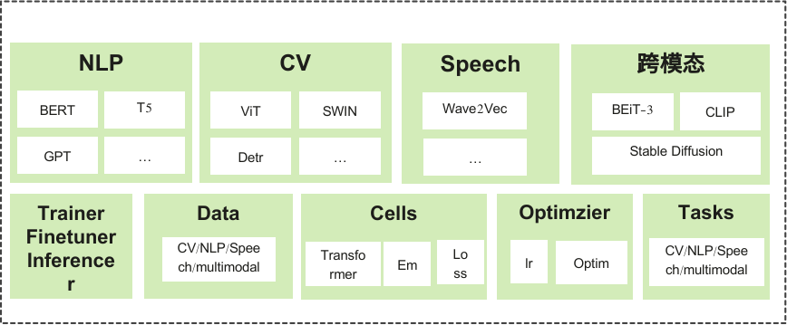

MindSpore Transformer 文档¶
MindSpore Transformer的目标是构建一个大模型训练、推理、部署的全流程套件：提供业内主流的Transformer类预训练模型，涵盖丰富的并行特性。期望帮助用户轻松地实现大模型训练。
MindSpore Transformer基于MindSpore内置的并行技术，具备如下特点：
提供典型SOTA网络的预训练、微调和部署能力。支持GPT、BERT等网络。
一行代码实现从单卡到大规模集群训练的无缝切换。
提供灵活易用的个性化并行配置。
能够自动进行拓扑感知，高效地融合数据并行和模型并行策略；实现单卡到大规模集群的无缝切换。
如果您对MindSpore Transformer有任何建议，请通过 Gitee 或MindSpore与我们联系，我们将及时处理。
使用MindSpore Transformer的典型场景¶
需要使用BERT、GPT等Transformer类网络进行微调和部署
需要进行Transformer类网络大规模训练
基本结构¶
MindSpore Transformer是一个基于MindSpore的Python软件包。
提供的高级功能包括：
提供典型SOTA网络例如BERT的预训练、微调和部署能力。
支持混合并行训练大模型能力。
安装部署
BERT微调
API参考